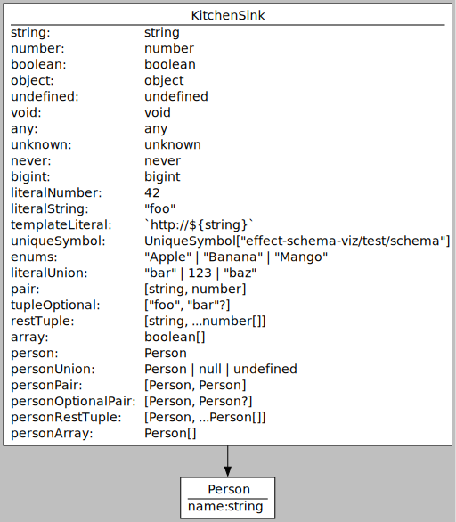
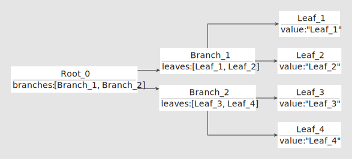

effect-schema-viz
effect-schema-viz
Visualize your Effect/Schema.
Quick Start
1. Requirements
Effect obviously, but you will also need the dot executable from Graphviz in your path to generate images from .dot files.
For the quick start example below you will also need tsx:
pnpm add -D tsx
2. Install
pnpm add -D effect-schema-viz
3. Use From Code
Create a script in your project source folder, for example src/show-schema.ts:
#!/usr/bin/env tsx
import {Effect, pipe, Schema} from 'effect'
import {schemasToDot} from 'effect-schema-viz'
class Person extends Schema.Class<Person>('Person')({
id: Schema.Number,
name: Schema.String,
}) {}
const dot = await pipe(Person, schemasToDot('example'), Effect.runPromise)
console.log(dot)
Run the script with:
tsx src/show-schema.ts > diagram.dot && dot -Tsvg diagram.dot > diagram.svg
Your SVG diagram should look like this:
More Examples
Click here for more examples.
| Source | Diagram |
|---|---|
| struct.ts |  |
| class.ts | |
| kitchen-sink.ts |  |
| dependencies.ts |  |
Features
- Render your
Effect/Schemaobject types, structs or classes, in Graphviz, and the relations between them as edges. - Customize Graphviz node attributes per node, and the Graphviz edge attributes for all outgoing edges of a node.
- Besides annotating your anonymous structs with unique identifiers, no special work required to graph your schemas. Simply send the object types you want to graph to
schemasToDotand get back a Graphviz.dotfile in a string.
Using
Importing
Everything can be imported from the single entry point effect-schema-viz:
import {pipe, Effect} from 'effect'
import {schemasToDot} from 'effect-schema-viz'
import MyObjectTypeSchema from 'somewhere'
// Compile schema to Graphviz .dot format.
const dot = await pipe(MyObjectTypeSchema, schemasToDot('MyObjectType'), Effect.runPromise)
console.log(dot)
Graphing Object Type Schemas
schemasToDot is the function used to convert schemas to dot format.
If you have a graph and just want to dd nodes, or want the errors in the return value and not shown on the graph, you can use some of the variants of schemasToDot:
addSchemasAndErrorsgraphSchemasaddSchemasaddObjectType
Error Handling
schemasToDot will render all errors as error nodes inside the diagram. Use addSchemas to get the errors with the return value.
Customizing Appearance
Besides the identifier annotation used to identify anonymous structs, Graphviz node and edge attributes are also encoded in schema annotations. You can set these annotations using the functions setNodeAttributes and setEdgeAttributes.
Note Graphviz attributes are not orthogonal to each other. For example, setting the node attribute fillcolor will only work if the style attribute does not include filled, as explained here.
Labels
By default nodes will be configured with Graphviz HTML labels. You can set your own label by setting the label entry on the Graphviz attributes of a node. If a node is found that already has a label, the label is left undisturbed.
For example to draw the object type ClassFoo as a box shape, without using the HTML label feature, we can annotate the schema:
import {setNodeAttributes} from 'effect-schema-viz'
const annotated = setNodeAttributes({
label: 'ClassFoo',
shape: 'box',
})(ClassFoo)
Limitations
- Without parsing the source,
effect-schema-vizcannot know the names of yourStructs. To get useful diagrams, you should annotate your structs with the identifier annotation, using one of:Effect/Schemaidentifier annotation- Create your structs using Struct.named(name)({...}).
- Call the function setIdentifier on the
Struct. - Use classes instead of structs. Classes are identifiable with no extra work. You can also wrap you structs with classes.
- Struct tag names are not yet usable as identifiers for anonymous structs.
- No support yet for relations other than has a.
- No support yet for Records or index signatures.
- Nothing is written yet on the edges.
- No support yet for custom declarations.
See Also
- API Documentation.
src/diagrampackage type diagram.- graphviz-ts.
- Effect/Schema.
{kind=link}